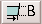
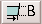

|
Edition de fichiers mpeg 1.Introduction Avidemux sait lire les fichiers mpeg une fois l'index crée, en particulier les flux videos purs (.m1v/.m2v) et les fichiers types program stream, par example les fichiers vobs d'un DVD ou les fichiers issus d'une capture avec une winTvPVR. D'un point de vue interne, les mpeg sont vus sous forme d'images avec un faux codec (MPEG). Si vous enregistrez le fichier en mode copy, vous obtiendrez un mpeg à l'intérieur d'un avi, mais comme ce n'est pas une combinaison standard, seul Avidemux sera capable de lire ce résultat. 2.Découpage Selon la m�hode habituelle, commencez par définir la partie qui vous intéresse avec les boutons Aucune précaution particulière n'est ici nécessaire. Enregistrez l'audio en mode copy en choisissant File->Save audio. Vous obtiendrez un fichier .mp2 ou .ac3. Pour la vidéo, il faut utiliser File->Save raw stream. Cela permet d'obtenir directement les données brutes du démultiplexeur, en courtcicuitant le décodeur. Les images sont re-ordonnées pour être dans un ordre compatible avec n'importe quel player. Vous obtenez ainis un fichier .m1v ou .m2v contenant un flux élémentaire mpeg1/2 qui devrait être synchronisé avec votre fichier audio .mp2. Le moment est venu de remultiplexer les deux flux pour obtenir un fichier .mpg. Le premier seq_header porte le timestamp de la premième image (non coupé). Cela risque de perturber mplex et vous obtiendrez des tonnes d'avertissements et de messages d'erreur. Idem avec mplayer en le relisant. La meilleure solution consiste à utiliser tcmplex de transcode pour les remultiplexer ensuite. |
 et . Il est recommandé de lire la section
et . Il est recommandé de lire la section